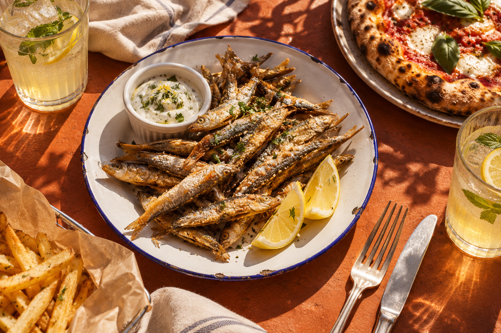
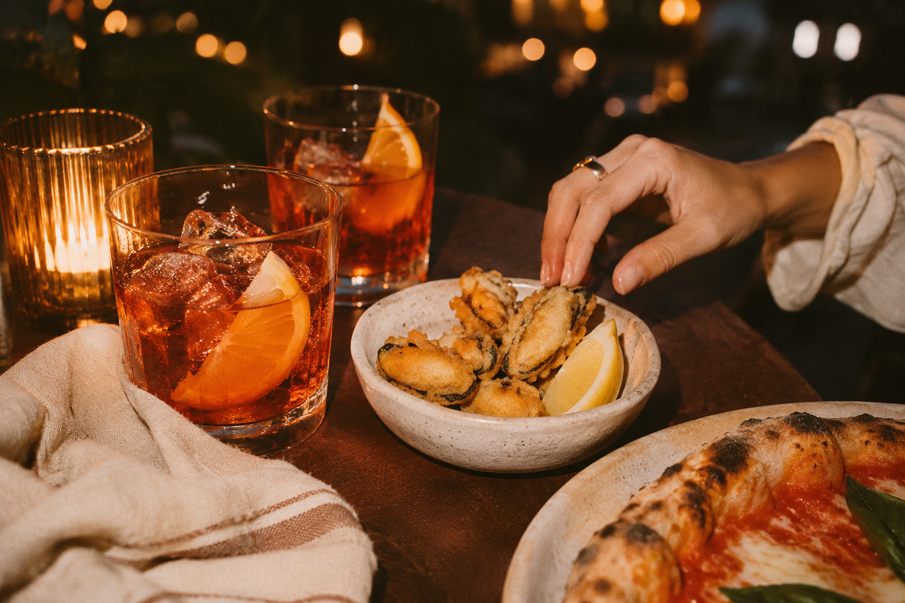

✳ КАФЕ-БАР С ЮЖНЫМ ХАРАКТЕРОМ
ДАВАЙЕЩЁ…
Ещё по кусочку. Ещё одну историю.
Ещё немного времени вместе.

ЗНАКОМСТВО НАЧИНАЕТСЯ СО ВКУСА
Те самые таганрогские семечки
ещё?
ещё!
ФУД-ВИЗУАЛИЗАЦИЯ ДЛЯ КОНЦЕПЦИИ
ещё!
01 / НАШ ХАРАКТЕР
Есть места.
А есть своё место.
Забежать после прогулки по Таганрогу. Разделить пиццу. Попробовать местную рыбку. Засидеться за разговором — и никуда не спешить.
«Ещё… ещё…» — кафе-бар на Тургеневском. Для простых радостей, хорошего аппетита и планов, которые начинаются со слов «давай зайдём».
03 / У КАЖДОГО ВРЕМЕНИ СВОЙ ВКУС
ЕЩЁ ОДИН
ХОРОШИЙ
ВЕЧЕР.
Собраться за одним столом. Заказать что-нибудь на всех. И забыть, который час.
БОЛЬШЕ ВСТРЕЧ. МЕНЬШЕ «КАК-НИБУДЬ».
Ну ещёпять минуточек!
ВИЗУАЛЬНОЕ НАСТРОЕНИЕ · КОНЦЕПЦИЯ
04 / УВИДИМСЯ НА ТУРГЕНЕВСКОМ
Ваш столик
где-то здесь. ↴
АДРЕС ДЛЯ ХОРОШЕГО ВЕЧЕРАТаганрог,
Построить маршрут ↗Таганрог,
Тургеневский пер., 8
После прогулки — на что-нибудь вкусное.
ПОЗВОНИТЬ И ДОГОВОРИТЬСЯ+7 988 949-51-09Время работы и свободные столики
уточняйте перед визитом.
А МОЖНО ПРОСТО ДОГОВОРИТЬСЯ.